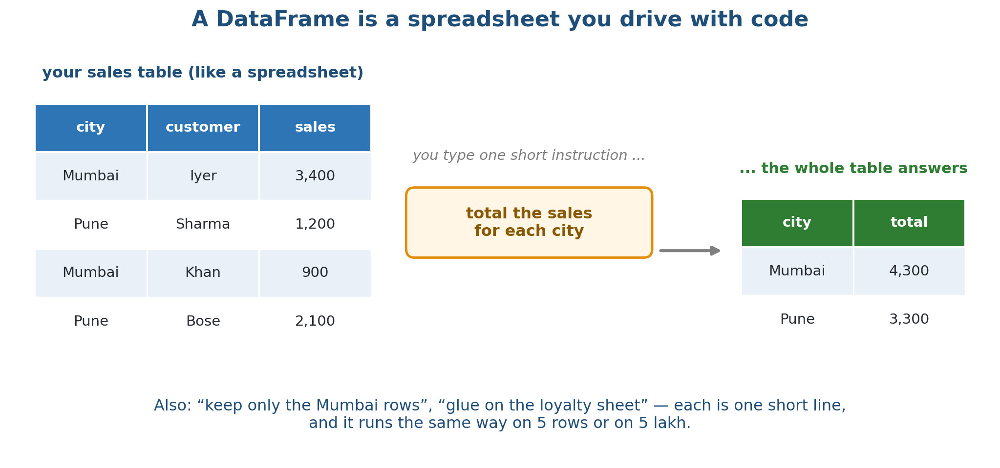
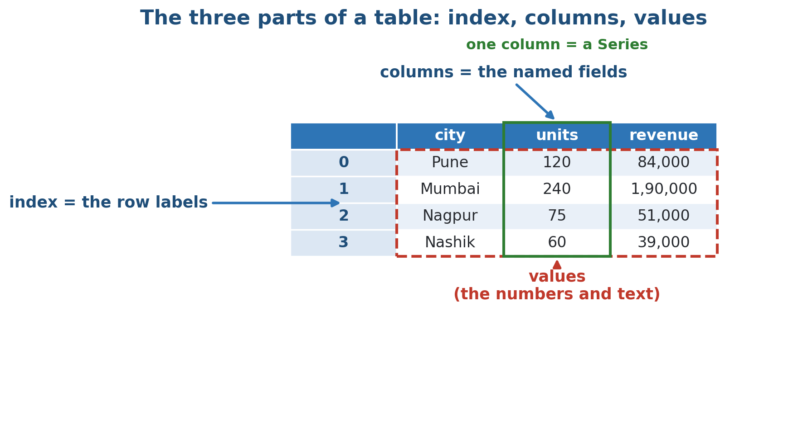
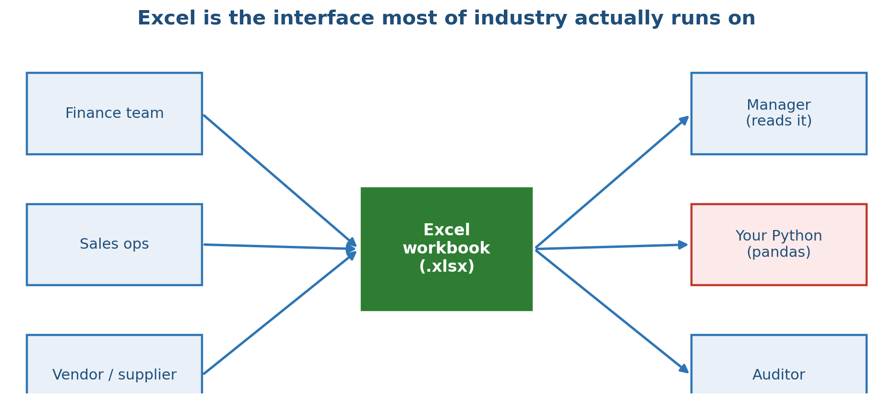
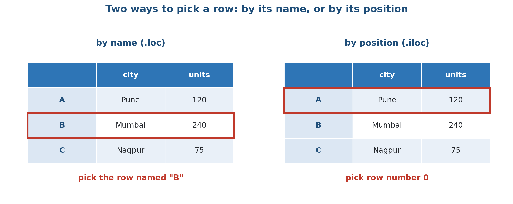
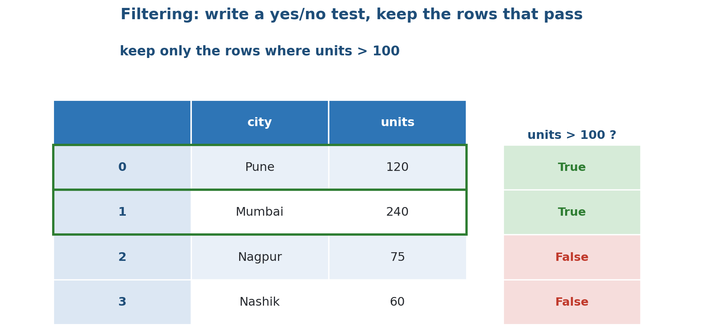
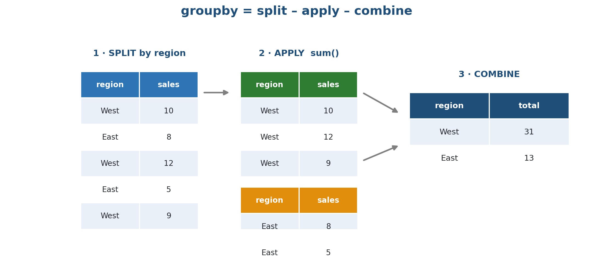
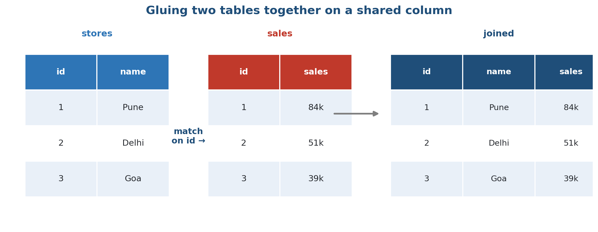
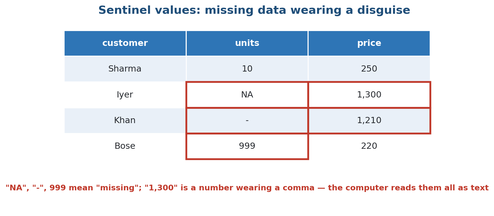
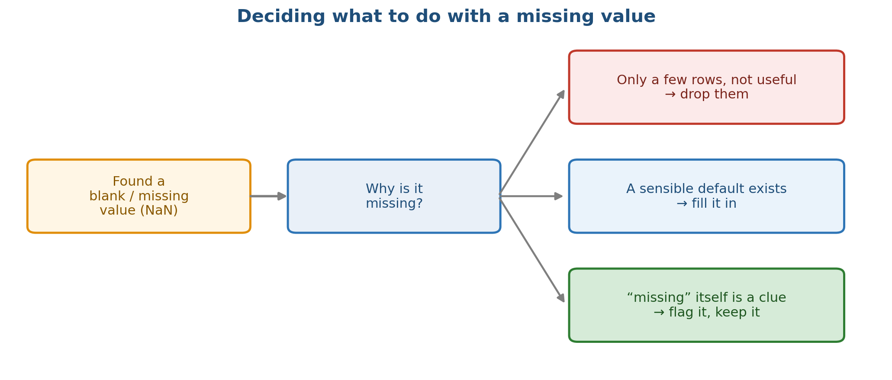
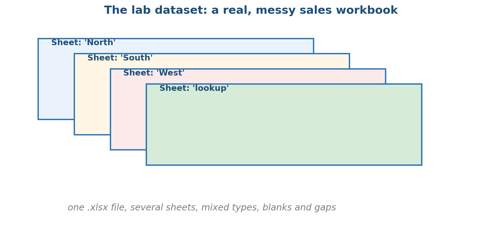

The deck from class, as a page: every slide, its notes and its diagrams. A faithful copy — you do not need the .pptx file.
Spreadsheets You Drive with Code
- Pandas & Excel: a pragmatic 2-hour crash course on real files
APPLICATIONS OF MATHEMATICS IN INDUSTRY Module 0 — Foundations & Tools · Session S3 · 2 hours Module 0 · Week 2 — the tool you will touch every week
The problem: an afternoon of scrolling
- A shop owner in Pune keeps a year of sales in one Excel file — every order, across a few city outlets, with customer names and amounts in rupees.
- Before the month-end review she wants three things: which city sold the most, who the big-spender customers are, and a clean copy.
- The file has blanks, a row typed in twice, and one column that came in as text instead of numbers.
- By scrolling and clicking that is an afternoon — and she will still miss something.
- Today: do the whole job in a handful of short lines that never miss a row.
The one idea, in a single picture
- Same rows and columns you see in Excel.
- Instead of clicking and dragging, you type one short line.
- “Total the sales for each city” is a single instruction.
- It runs the same on 5 rows or 5 lakh.

A DataFrame is a spreadsheet you drive with code: type one short instruction, and the whole table answers.
What we'll cover
- 1 Get real data in — read a file, look at it (you try it)
- 2 Pick rows and columns; filter to what you want
- 3 New columns, and summaries with groupby
- 4 Join two tables on a shared column
- 5 Messy files: clean them and hand a tidy file back
- 6 Lab: clean a real, messy Excel workbook end to end
1 · Get the data in
The three parts of a table

Index (the row labels), columns (the named fields), and values (the numbers and text). One column on its own is a Series.
Read a real file off disk
- One line reads the whole file into a table; .head() shows the first few rows.
CODE import pandas as pd # read the shop's sales file straight into a table df = pd.read_csv("shop_sales.csv") print(df.head()) # the first 5 rows OUTPUT ▸ date city customer units price 0 2024-01-03 Pune Asha 10 250 1 2024-01-05 Mumbai Ravi 4 300 2 2024-01-06 Pune Meera 7 250 3 2024-01-08 Delhi John 2 180 4 2024-01-09 Mumbai Sara 9 300
Always look before you compute
- shape is (rows, columns); info() shows every column's type and how many values are present. Run it every single time you load data.
CODE print(df.shape) # (rows, columns) df.info() # column names, types, missing counts OUTPUT ▸ (12, 5) RangeIndex: 12 entries, 0 to 11 Data columns (total 5 columns): # Column Non-Null Count Dtype -- ------ -------------- ----- 0 date 12 non-null object 1 city 12 non-null object 2 customer 12 non-null object 3 units 12 non-null int64 4 price 12 non-null int64
Your turn (2 min): import and look
- The file shop_sales.csv is in this session's data/ folder.
- Read it into a table: df = pd.read_csv("../data/shop_sales.csv").
- How many rows and columns? Ask df.shape.
- Which cities appear? Try df["city"].unique().
- Which city sold the most units? Hold that thought — groupby (a few slides away) answers it in one line.
Excel too — and industry runs on it
- read_excel(...) instead of read_csv.
- sheet_name=None reads every sheet.
- Python reads and writes the same files.
- Meet people where they are.

pd.read_excel reads .xlsx the same way — one sheet, or every sheet at once. Finance, sales and vendors all speak Excel.
2 · Pick rows and columns
Two ways to pick a row: by name and by position

Pick a row by its label (.loc), or by its position from the top (.iloc).
Pull a column, and pick a row
- A single column is a Series; .unique() lists its distinct values; .iloc[0] grabs the first row by position.
CODE # one column on its own is a Series cities = df["city"] print(cities.unique()) # the distinct cities # one row by position print(df.iloc[0]) # the first row OUTPUT ▸ ['Pune' 'Mumbai' 'Delhi'] date 2024-01-03 city Pune customer Asha units 10 price 250 Name: 0, dtype: object
Filtering: keep the rows that pass a test
- A test makes a True/False column.
- “keep rows where units > 100”.
- Keep only the True rows.
- Combine tests with & (and) / | (or).

Write a yes/no test, get True or False for each row, keep the True rows.
Filter to just the Mumbai rows
- The test in the brackets is True/False for every row; only the True rows survive.
CODE # keep only the rows where city is Mumbai mumbai = df[df["city"] == "Mumbai"] print(mumbai) OUTPUT ▸ date city customer units price 1 2024-01-05 Mumbai Ravi 4 300 4 2024-01-09 Mumbai Sara 9 300 7 2024-01-14 Mumbai Ravi 8 300 9 2024-01-17 Mumbai Sara 13 300
Filter on more than one test
- Wrap each test in its own () and join with & or |; .isin([...]) matches any value in a list.
CODE # combine tests with & (and), | (or) -- keep EACH test in () big_mumbai = df[(df["city"] == "Mumbai") & (df["units"] > 8)] print(big_mumbai) # match any value in a list with .isin(...) picked = df[df["city"].isin(["Delhi", "Mumbai"])] print("rows kept:", picked.shape) OUTPUT ▸ date city customer units price 4 2024-01-09 Mumbai Sara 9 300 9 2024-01-17 Mumbai Sara 13 300 rows kept: (7, 5)
3 · New columns and summaries
Make a new column, then sort
- units * price runs down the whole column at once (no loop); sort_values ranks the rows.
CODE # a new column from two others -- whole column at once, no loop df["revenue"] = df["units"] * df["price"] # biggest sales first print(df.sort_values("revenue", ascending=False).head()) OUTPUT ▸ date city customer units price revenue 9 2024-01-17 Mumbai Sara 13 300 3900 4 2024-01-09 Mumbai Sara 9 300 2700 0 2024-01-03 Pune Asha 10 250 2500 7 2024-01-14 Mumbai Ravi 8 300 2400 2 2024-01-06 Pune Meera 7 250 1750
groupby = split, apply, combine

Split the rows into groups, apply a summary to each, combine the answers into a small table.
Total the units for each city
- One line does all three steps — the city names become the index of a small result.
CODE # split by city, sum the units in each group, combine by_city = df.groupby("city")["units"].sum() print(by_city) OUTPUT ▸ city Delhi 12 Mumbai 34 Pune 31 Name: units, dtype: int64
Quick summaries: count a category, describe the numbers
- value_counts tallies a category (add normalize=True for a percentage); describe() summarises every number column at once.
CODE # how many rows fall in each category (add normalize=True for a %) print(df["city"].value_counts()) # a one-shot numeric summary of every number column print(df.describe()) OUTPUT ▸ city Pune 5 Mumbai 4 Delhi 3 Name: count, dtype: int64 units price revenue count 12.000000 12.000000 12.000000 mean 6.416667 249.166667 1675.833333 min 2.000000 180.000000 360.000000 max 13.000000 300.000000 3900.000000
4 · Join two tables
Joining two tables on a shared column

A join lines up rows from two tables that share a key column — a cleaner VLOOKUP that scales to millions of rows.
Join the loyalty tiers onto sales
- John and Sara have no tier, so a left join keeps their rows and marks the gap NaN.
CODE tiers = pd.DataFrame({ "customer": ["Asha", "Ravi", "Meera"], "tier": ["gold", "silver", "bronze"], }) # match on customer; keep every sales row (left join) tagged = pd.merge(df, tiers, on="customer", how="left") print(tagged.head()) OUTPUT ▸ date city customer units price revenue tier 0 2024-01-03 Pune Asha 10 250 2500 gold 1 2024-01-05 Mumbai Ravi 4 300 1200 silver 2 2024-01-06 Pune Meera 7 250 1750 bronze 3 2024-01-08 Delhi John 2 180 360 NaN 4 2024-01-09 Mumbai Sara 9 300 2700 NaN
5 · Messy files: clean and hand back
Sentinel values: missing data in disguise

Files hide gaps as "NA", "-", 999 — and store numbers as text like "1,300". The computer reads them all literally.
What to do with a missing value

Drop it, fill it, or treat ‘missing’ as information in its own right.
Clean it, then hand a tidy file back
- Drop the repeat row, replace the fake 'NA', turn the text price into a real number, and write a clean Excel file back.
CODE messy = pd.DataFrame({ "city": ["Pune", "NA", "Mumbai", "Pune"], "price": ["250", "250", "300", "250"], # text! }) messy = messy.drop_duplicates() messy["city"] = messy["city"].replace("NA", "unknown") messy["price"] = pd.to_numeric(messy["price"]) messy.to_excel("clean_sales.xlsx", index=False) # back to Excel print(messy) OUTPUT ▸ city price 0 Pune 250 1 unknown 250 2 Mumbai 300 # price is now int64, not text -- sums and averages work
Tidy the column names and the text
- The .str tools clean a whole text column at once — do the same to df.columns to fix headers.
CODE # real files arrive with messy headers and messy text raw = pd.DataFrame({" City ": [" pune", "MUMBAI ", "Pune"], "Units": [10, 4, 7]}) # clean the headers: strip spaces, lowercase, spaces -> underscores raw.columns = raw.columns.str.strip().str.lower().str.replace(" ", "_") # tidy the text values: strip spaces, then Title Case raw["city"] = raw["city"].str.strip().str.title() print(raw) print(list(raw.columns)) OUTPUT ▸ city units 0 Pune 10 1 Mumbai 4 2 Pune 7 ['city', 'units']
Change only the rows you mean, with .loc
- df.loc[rows, column] = value edits in place. Avoid df[mask]["col"] = ... — it may change only a throwaway copy and warn.
CODE # label every order, then overwrite ONLY the small ones -- in one step df["size"] = "big" df.loc[df["units"] < 5, "size"] = "small" print(df[["customer", "units", "size"]].head()) OUTPUT ▸ customer units size 0 Asha 10 big 1 Ravi 4 small 2 Meera 7 big 3 John 2 small 4 Sara 9 big
When pandas bites — common traps
- Avoid
- Trusting the types — a stray ‘NA’ silently makes a number column text
- Editing a filtered copy: df[mask]['col'] = ... (may change nothing)
- Joining on keys of different type or with stray spaces (rows vanish)
- Assuming Excel cells are clean: dates as text, numbers with commas
- Do instead
- Run df.info() right after loading, every time
- Assign through .loc: df.loc[mask, 'col'] = ...
- Tidy the keys (strip spaces, match types) before joining
- Set na_values=[...] so fake codes load as real blanks
6 · Lab and wrap-up
Today's lab data: a messy multi-sheet workbook

One .xlsx file: North / South / West sales sheets, a lookup sheet, real gaps and sentinel codes.
Lab: clean and summarise a messy Excel workbook
- In the lab: import a real sales file, look at it, and answer the shop owner's three questions — then clean the messy multi-sheet workbook end to end and hand a tidy Excel file back.
- 1. Notebook 01: read shop_sales.csv, inspect it (shape, info), pick and filter rows, add a revenue column.
- 2. Notebook 02: total and count sales per city and per customer (split-apply-combine), then join a loyalty-tier sheet and summarise.
- 3. Notebook 03: read shop_sales_messy.xlsx (all sheets at once), decode the fake ‘missing’ codes, drop the duplicate, fix the text price column.
- 4. Write the tidy data plus a clean per-city summary back to Excel.
- 5. Finished early? Open the Stretch cells — join the region lookup, pivot a small report.
- Deliverable: a notebook on GitHub: real file in, the three questions answered, and a messy workbook turned into one tidy table plus a summary sheet.
Key takeaways
- A DataFrame is a spreadsheet you drive with code: read a file, then one short line answers.
- Look before you compute: df.head(), df.shape, df.info() — every single time.
- Pick by name (.loc) or position (.iloc); filtering keeps the rows that pass a yes/no test.
- groupby is split-apply-combine; a join glues two tables on a shared column (mind the key type).
- Missing values and sentinel codes are everywhere — decode, decide, and fix types before you model.
- Industry runs on Excel: read it, clean it in Python, and hand a tidy file back.
Code & further reading
- Code: github.com/bp-course/applied-maths-in-industry › S03_pandas_excel/
- Notebooks for this session
- Data
- Reading
01_your_first_dataframe.ipynb 02_group_and_join.ipynb 03_clean_a_messy_excel_file.ipynb data/shop_sales.csv — a clean file you read in (the import exercise) data/shop_sales_messy.xlsx — a messy multi-sheet workbook for the cleaning lab New to code? primers/python_in_15_minutes.md Any unfamiliar word: primers/glossary.md Wes McKinney — Python for Data Analysis, ch. 5 (Getting Started with pandas) pandas: ‘10 minutes to pandas’ (official docs) pandas: Working with Excel files (official docs)
Next session
- S4 — Git, GitHub and reading a Python error. We'll save and share today's work properly, and learn to make sense of a traceback when pandas bites.